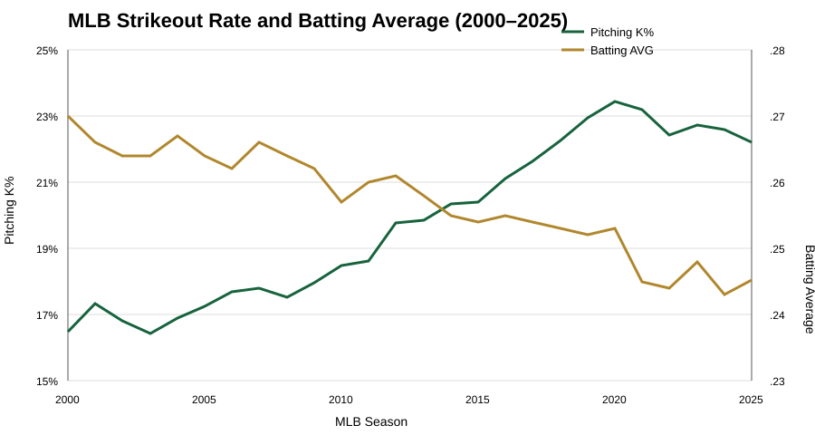
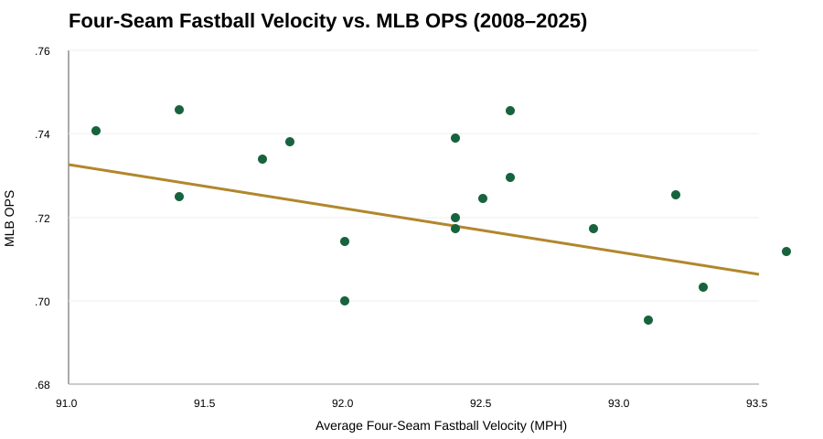

PROJECT 01 • PYTHON EDA
The Evolution of Pitching and Hitting in MLB
An exploratory analysis of modern pitching, strikeout rates, fastball velocity, and offensive production from 2000–2025.
1. Problem Definition
Research Question
To what extent have changes in modern pitching affected batting average and offensive production in Major League Baseball from 2000 to 2025?
MLB pitching has become increasingly focused on velocity, strikeouts, pitch specialization, and data-driven strategy. This project examines whether league-level changes in strikeout rate and four-seam fastball velocity are associated with changes in batting average and OPS.
2. Data Description
The analysis combines two public baseball data sources. MLB Stats API provides traditional hitting and pitching statistics for 2000–2025. Baseball Savant provides average four-seam fastball velocity for 2008–2025 because league-wide pitch tracking begins in 2008.
The traditional dataset contains 26 MLB seasons. The final velocity-overlap dataset contains 18 seasons (2008–2025). The analyzed variables contained no missing values after preparation.
3. Conceptualization & Operationalization
Pitching effectiveness: represented by league strikeout rate (K%), K/9, and average four-seam fastball velocity. These measures capture strikeout frequency and one important dimension of pitch speed.
Offensive production: represented by batting average (AVG), on-base percentage (OBP), slugging percentage (SLG), and OPS. AVG captures hitting for average while OPS summarizes reaching base and power.
The unit of analysis is the MLB league-season. The project therefore asks whether changes at the league-season level move together; it does not make claims about individual pitchers or hitters.
4. Data Cleaning & Preparation
Python and pandas were used to collect, organize, calculate, merge, and inspect the data. Hitting statistics were aggregated from player-level season records. Pitching statistics were aggregated across pitchers by season. MLB innings notation was handled carefully: a value such as 5.2 means five innings and two outs, not 5.2 mathematical innings. Pitching innings were converted to total outs before calculating K/9.
The hitting and pitching datasets were merged by season, then four-seam velocity was merged for the 2008–2025 overlap. Missing-value checks were performed before analysis. The notebook contains the full collection, calculation, merge, and exploratory-analysis workflow.
5. Visualizations & Insights


6. Storytelling & Key Findings
Correlation analysis found a weak negative relationship between fastball velocity and OPS (r = -0.263), a very strong negative relationship between K% and batting average (r = -0.932), and a moderate negative relationship between K% and OPS (r = -0.581). Overall, strikeout rate was more strongly associated with offensive decline than fastball velocity alone.
Answer to the research question: modern pitching changes are associated with lower league batting average and offensive production, but the evidence here suggests that the increase in strikeout frequency is more closely related to the offensive changes than fastball velocity by itself. Because the study is observational, these findings should not be interpreted as proof that pitching changes caused the decline.
7. Ethics, Limitations & Reflection
- The project uses public MLB statistics and does not analyze sensitive personal information.
- The unit of analysis is the MLB season, so results should not be generalized to individual players.
- Four-seam velocity is available beginning in 2008, limiting direct velocity comparisons before that year.
- Pitch-tracking technologies and measurement systems changed over time.
- Hitter approach, pitch selection, defensive positioning, rules, baseball composition, and league strategy may also affect offense.
- Correlation does not establish causation.
This project reinforced the importance of defining variables before analyzing them, checking data calculations carefully, and communicating limitations instead of overstating a result.
8. Code & AI Transparency
AI disclosure: Generative AI was used as a coding and writing support tool during project development. It helped troubleshoot Python/API errors, explain code logic, improve organization and wording, and suggest ways to communicate findings. The student reviewed the code, calculations, visualizations, interpretations, and final written material before submission.
9. Academic References
- Mercier, M.-A., Tremblay, M., Daneau, C., & Descarreaux, M. (2020). Individual factors associated with baseball pitching performance: Scoping review. BMJ Open Sport & Exercise Medicine, 6(1), e000704. https://doi.org/10.1136/bmjsem-2019-000704
- Slowik, J. S., Aune, K. T., Diffendaffer, A. Z., Cain, E. L., Dugas, J. R., & Fleisig, G. S. (2019). Fastball velocity and elbow-varus torque in professional baseball pitchers. Journal of Athletic Training, 54(3), 296–301. https://doi.org/10.4085/1062-6050-558-17
- Manzi, J. E., Dowling, B., Wang, Z., Sudah, S. Y., Moran, J., Chen, F. R., Estrada, J. A., Nicholson, A., Ciccotti, M. G., Ruzbarsky, J. J., & Dines, J. S. (2024). Kinematic modeling of pitch velocity in high school and professional baseball pitchers: Comparisons with the literature. Orthopaedic Journal of Sports Medicine, 12(8). https://doi.org/10.1177/23259671241262730
10. Data Sources
MLB Stats API and Baseball Savant were used for the project dataset. Baseball Savant was used specifically for season-level four-seam fastball velocity.